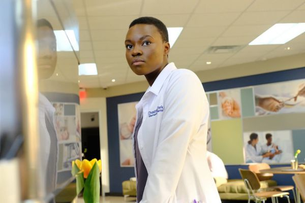

Melhores professores
Há diversas séries, que ensinaram o bastante para salvar uma pessoas engasgada com uma faca e um canudinho.
-
Dra. Meredith Grey
Geral
-
Dr. Callahan
Trauma
-

Dr. Shaun Murphy
Cardio
-
Dra. Lexie Grey
Neuro
-
Dra. Miranda Bailey
Geral
-
Dra. Amelia shaperd
Neuro
-
Dra. Cristina Yang
Cardio
-
Dra. Callie Torres
Ortopedia
-

Dra. Mina Okafor
Cardio